한 줄
결론
결론
샌더스는 미국의 문제를 "합법적이지만 부패한" 돈의 정치로 보고, 의료·세금·AI를 모두 그 틀로 설명합니다. 진행자는 부유세의 실행 방식과 AI 속도 조절의 국제 경쟁 문제를 되묻고, 샌더스는 "쉽지 않다"고 인정합니다. [1]
85세 샌더스가 중간선거 직후 영국 팟캐스트에 나와 1시간 29분 동안 선거자금, 의료, 부유세, AI, 이란 전쟁, 2028년 대선까지 이야기했습니다. 해법은 메디케어 포 올, 억만장자 5% 부유세, 초지능 개발 금지입니다.
버니 샌더스 인터뷰 정리: 돈과 정치, 부유세, AI 규제. The Diary Of A CEO 1시간 29분 대담 핵심과 화면 자료. 출연 버니 샌더스(미국 상원의원, 버몬트) · 진행 스티븐 바틀렛(Steven Bartlett). [1]
샌더스는 미국의 문제를 "합법적이지만 부패한" 돈의 정치로 보고, 의료·세금·AI를 모두 그 틀로 설명합니다. 진행자는 부유세의 실행 방식과 AI 속도 조절의 국제 경쟁 문제를 되묻고, 샌더스는 "쉽지 않다"고 인정합니다. [1]
1억 달러 기부는 합법, 5달러 매수는 불법. 샌더스는 이 차이를 "부패한 시스템"이라고 부릅니다. [구두] [1]
4년에 걸쳐 메디케어 가입 연령을 낮추는 메디케어 포 올, 억만장자 약 2,000명에게 매년 5% 부유세. [구두] [1]
초지능 개발 금지, 안전장치가 생길 때까지 고급 AI 일시 중지, 대형 AI 기업 지분 50% 공공 소유. [구두] [1]
읽는 기준: 발언은 영어 자동 자막을 보고서가 번역했습니다. 화면 그래픽과 커뮤니티 노트는 1080p 프레임에서 그대로 옮겼습니다. 영상에서 말한 통계(60%가 월급으로 근근이 생활, 연 6만 명 사망, 부유세 연 4,000억 달러 등)와 사건(2026 중간선거 결과, 이란 전쟁)은 이 보고서에서 따로 확인하지 않았습니다(미검증). 샌더스의 주장은 모두 그의 견해로 옮겼고, 보고서는 어느 쪽도 지지하지 않습니다. 진행자 스티븐 바틀렛의 반론도 함께 적었습니다. 자막이 자동 생성이라 인명·숫자가 틀릴 수 있습니다. [원문]은 영상 화면에 보인 글자 그대로, [구두]는 화면엔 없고 말로만 한 내용(자동 자막 기반, 한국어는 보고서 번역), [추정]은 작성자가 보완한 부분, 영상에서 확인 불가는 화면·자막으로 확인할 수 없는 곳, 미검증은 영상 속 수치·주장으로 이 보고서에서 따로 확인하지 않은 것입니다. 바로 쓰는 버전은 보고서 제안이며, 영상에 나온 문장이 아닙니다. 이 영상은 프롬프트 튜토리얼이 아니라 정치·경제 대담입니다.
The Diary Of A CEO · 1:29:33 · 2026.11.19 17:00 KST 게시. 출연 버니 샌더스(미국 상원의원, 버몬트) · 진행 스티븐 바틀렛(Steven Bartlett). 조회수(참고): 수집 시점(2026.11.24 18:45 KST) 약 343만 회 · 좋아요 약 5.4만. [1]
영상은 클릭한 뒤에만 불러옵니다. 재생이 제한되면 YouTube에서 원영상 시청을 이용합니다. 시간 링크는 https://youtu.be/eocM1C3HfQg?t=초 형식입니다. [1]
| 시간 | 설명란 챕터(원문) | 보고서 번역 |
|---|---|---|
| 00:00 | Intro | 인트로 |
| 02:15 | Why Were These Midterms the Most Important in American History? | 이번 중간선거가 왜 가장 중요했나 |
| 04:52 | Is the Democratic Party Controlled by Big Money? | 민주당은 큰돈에 좌우되나 |
| 09:53 | Does Bernie Sanders Hate Donald Trump? | 트럼프를 증오하나 |
| 13:50 | Why Is Blaming Immigrants Working Across the West? | 이민자 탓이 왜 서구 전역에서 먹히나 |
| 17:23 | How Would Medicare for All Actually Happen? | 메디케어 포 올은 어떻게 실현되나 |
| 22:20 | Is the American Economy Rigged? | 미국 경제는 조작돼 있나 |
| 27:29 | Should Billionaires Pay a 5% Wealth Tax? | 억만장자 5% 부유세 |
| 32:58 | How Billionaires Avoid Taxes With Loans | 대출로 세금을 피하는 법 |
| 34:51 | Will Robots Replace Minimum Wage Workers? | 로봇이 최저임금 일자리를 대체하나 |
| 38:05 | Who Is Pushing AI, and What Do They Want? | 누가 AI를 밀고, 무엇을 원하나 |
| 41:33 | Why Bernie Sanders Wants to Ban Superintelligence | 초지능을 금지하자는 이유 |
| 44:17 | Should the Government Own 50% of AI Companies? | 정부가 AI 기업 지분 50%를? |
| 44:59 | Ads | 광고 |
| 47:04 | Who Should the Democrats Run in 2028? | 2028년 민주당 후보 |
| 48:26 | Did the Democratic Establishment Block Bernie in 2016? | 2016년 당 주류의 견제 |
| 50:14 | How Billionaire Owners Shape the News | 억만장자 소유주와 뉴스 |
| 54:17 | Why Does Bernie Prefer the Scandinavian Model? | 북유럽 모델을 선호하는 이유 |
| 58:32 | How the Holocaust Shaped Bernie's Politics | 홀로코스트와 그의 정치 |
| 1:02:30 | Why Do Working-Class Voters Back Trump? | 노동계층이 트럼프를 찍는 이유 |
| 1:03:23 | How His Mother's Early Death Shaped His Fight for Healthcare | 어머니의 이른 죽음과 의료 |
| 1:05:31 | Ads | 광고 |
| 1:07:35 | Bernie's Advice for Living a Good Life | 좋은 삶에 대한 조언 |
| 1:08:41 | Does Bernie Respect Elon Musk? | 머스크를 존중하나 |
| 1:12:16 | Can Democrats Pass Medicare for All Now? | 지금 메디케어 포 올 통과가 가능한가 |
| 1:15:18 | Is Bernie Sanders Worried About America's Future? | 미국의 미래가 걱정되나 |
| 1:18:14 | Will Bernie Sanders Run for President Again? | 대선에 다시 나오나 |
| 1:22:07 | Why Bernie Says the Iran War Was Based on a Lie | 이란 전쟁이 거짓에 기반했다는 이유 |
| 1:25:05 | What Does Bernie Sanders Want to Be Remembered For? | 어떻게 기억되고 싶나 |
| 1:28:06 | Would Stopping AI Data Centers Cause a Recession? | AI 데이터센터를 멈추면 경기침체가 오나 |
시간표는 영상 설명란의 챕터입니다. 설명란 원문과 보고서 번역을 나란히 두었습니다. [3]
결론부터 말씀드리면, 이 대담에서 샌더스의 주장은 한 가지 틀로 모입니다. 소수의 큰돈이 두 정당과 언론, AI 개발 방향까지 정하고 있고, 그 비용은 노동자가 치른다는 것입니다. [구두] [1]
진행자 스티븐 바틀렛은 동의하는 부분과 함께 반론을 꾸준히 냅니다. 부유세의 실행 방식, 미국만 AI를 늦출 때의 국제 경쟁, 북유럽 모델의 트레이드오프입니다. 샌더스는 이런 문제가 "쉽지 않다"고 인정하면서도 방향은 바꾸지 않습니다. [1]
구간은 02:15 ~ 09:53, 15:52 ~ 19:27입니다. [1]
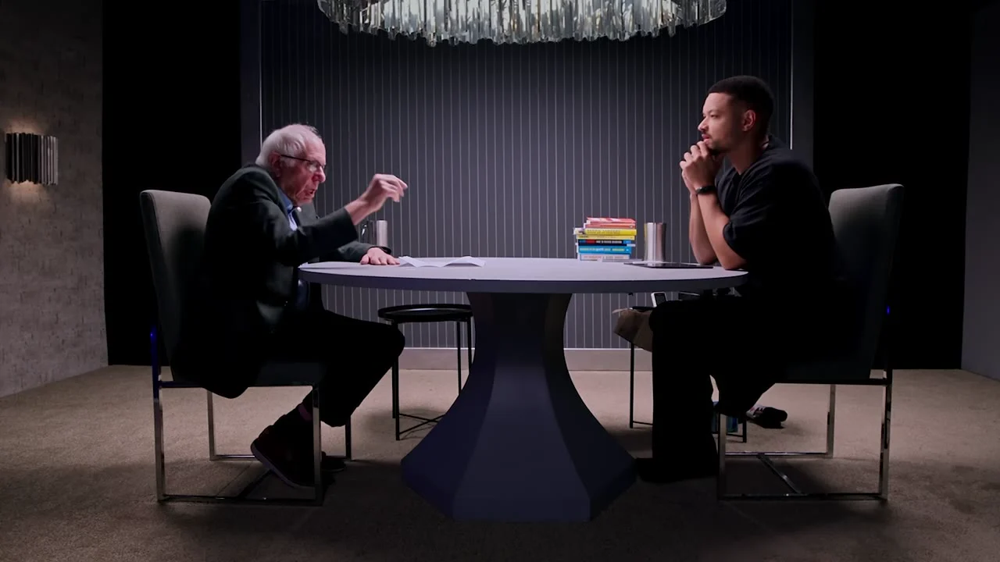
"If you said to me, Bernie, I'm going to contribute $100 million to your campaign through a super pack, I'd say, Steven, thanks so much, perfectly legal. … Bernie, I'm going to give you $5 to vote this way. Illegal.""버니, 슈퍼팩으로 1억 달러를 기부할게요" 하면 "고마워요, 완전히 합법입니다." … "5달러 줄 테니 이렇게 투표해 줘요"는 불법입니다.15:52
진행자가 "그게 바로 부패 아니냐"고 되묻자, 샌더스는 "법적으로 부패라는 단어는 불법을 뜻한다. 머스크가 한 일은 불법이 아니라 터무니없는 것이고, 고쳐야 할 부패한 시스템"이라고 답합니다. 16:22
머스크 이야기가 나오는 뒷부분에서 제작진이 붙인 사실 확인 자막입니다.
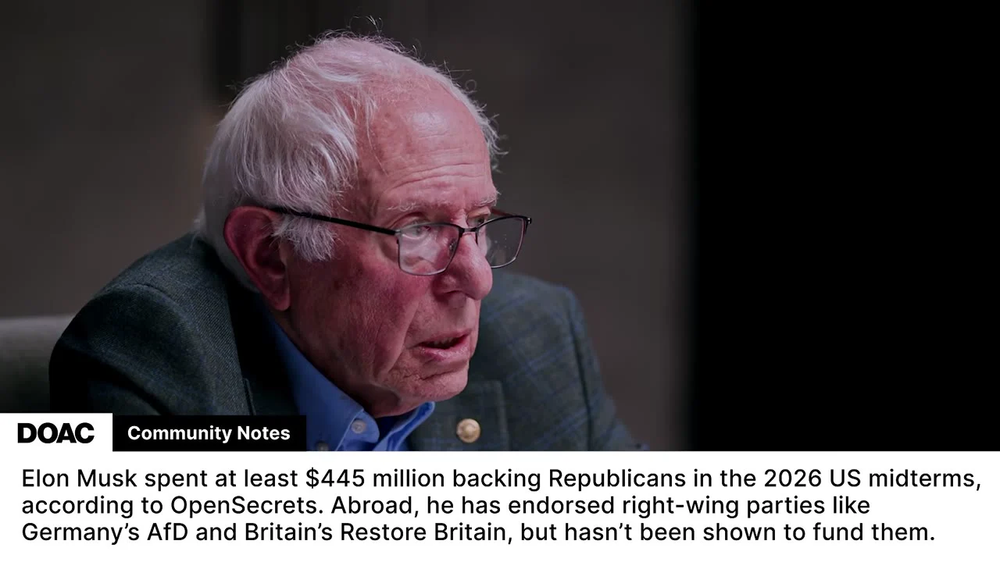
DOAC Community Notes Elon Musk spent at least $445 million backing Republicans in the 2026 US midterms, according to OpenSecrets. Abroad, he has endorsed right-wing parties like Germany's AfD and Britain's Restore Britain, but hasn't been shown to fund them.
구간은 09:53 ~ 15:07, 1:02:30 ~ 1:03:16, 1:12:16 ~ 1:15:18입니다. [1]
"If government does not respond to the concerns and needs of people, people lose faith in democracy."정부가 사람들의 걱정과 필요에 응답하지 않으면, 사람들은 민주주의에 대한 믿음을 잃습니다.14:21
구간은 16:35 ~ 22:18, 1:03:16 ~ 1:05:26입니다. [1]
"Our system is based on making the insurance companies and the drug companies wealthy. It is working. … It's designed to do what it's supposed to do."우리 시스템은 보험사와 제약사를 부자로 만드는 데 맞춰져 있습니다. 그리고 잘 작동하고 있습니다. 원래 하도록 설계된 일을 하고 있는 겁니다.21:16
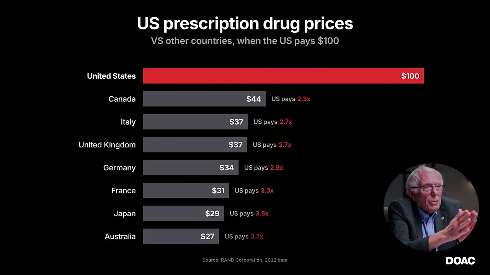
US prescription drug prices VS other countries, when the US pays $100 United States $100 Canada $44 US pays 2.3x Italy $37 US pays 2.7x United Kingdom $37 US pays 2.7x Germany $34 US pays 2.9x France $31 US pays 3.3x Japan $29 US pays 3.5x Australia $27 US pays 3.7x Source: RAND Corporation, 2022 data
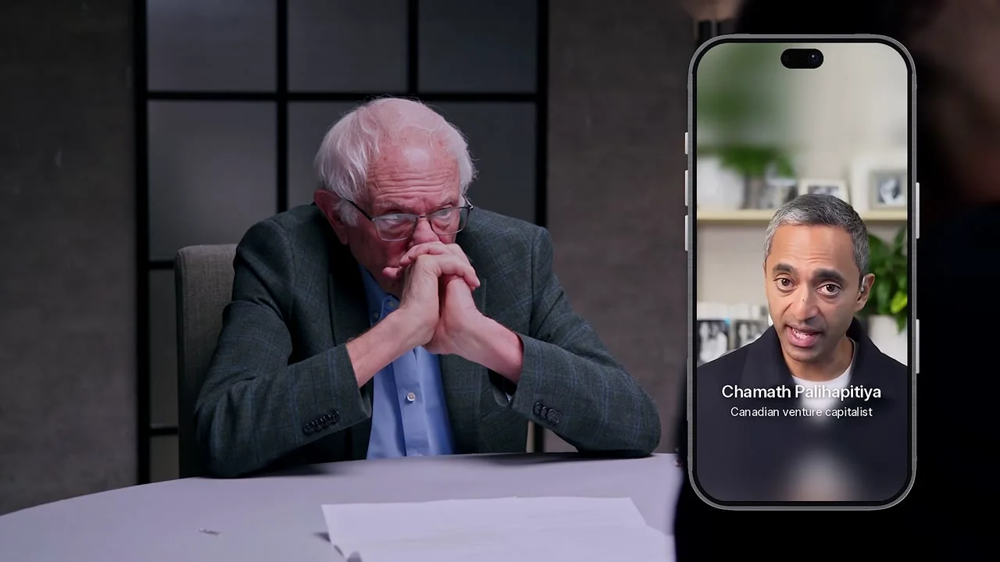
"Tell me about the progress. Where's the progress?"그 진보가 뭔지 말해 보세요. 진보가 어디 있습니까?26:41
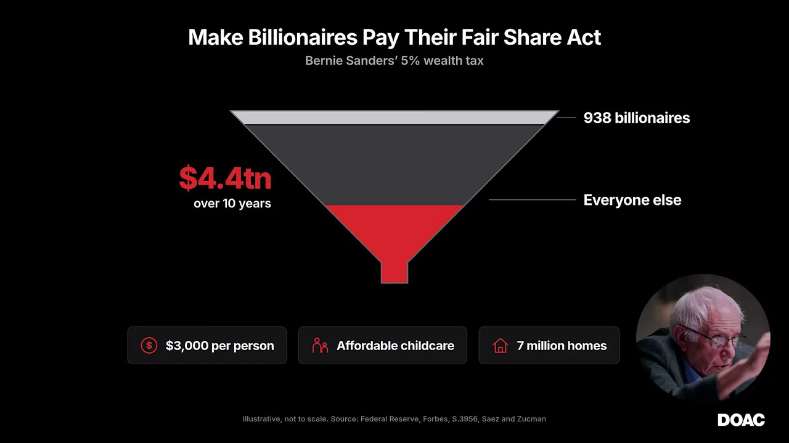
Make Billionaires Pay Their Fair Share Act Bernie Sanders' 5% wealth tax 938 billionaires $4.4tn over 10 years Everyone else $3,000 per person | Affordable childcare | 7 million homes Illustrative, not to scale. Source: Federal Reserve, Forbes, S.3956, Saez and Zucman
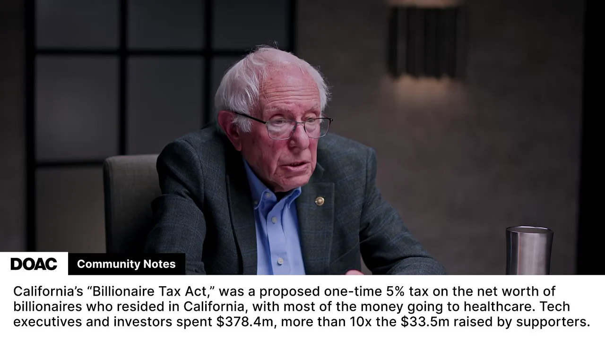
DOAC Community Notes California's "Billionaire Tax Act," was a proposed one-time 5% tax on the net worth of billionaires who resided in California, with most of the money going to healthcare. Tech executives and investors spent $378.4m, more than 10x the $33.5m raised by supporters.
구간은 34:51 ~ 44:59, 1:10:24 ~ 1:12:16, 1:28:06 ~ 끝입니다. [1]
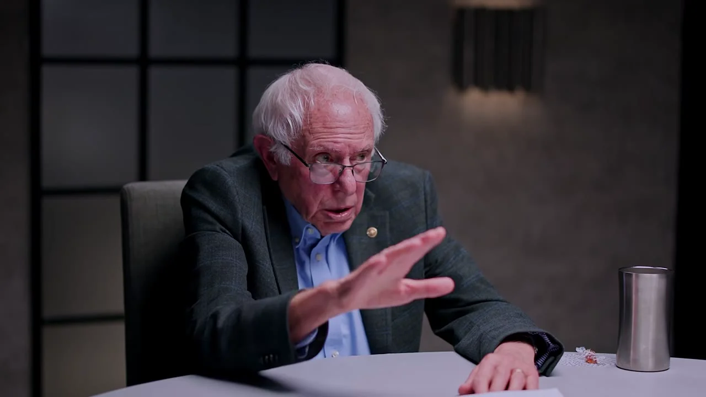
| 걱정 | 발언 요지 | 시각 |
|---|---|---|
| 일자리 | Anthropic 같은 AI 기업 CEO도 수백만 개 일자리가 사라질 수 있다고 말한다. 베이조스는 공장 자동화 펀드 1,000억 달러를 만든다. 텍사스에선 운전사 없는 18륜 트럭이 달린다. 운송 일자리 600만~700만 개. (수치 미검증) | 37:00 |
| 누가 미는가 | 머스크, 베이조스, 엘리슨, 올트먼 같은 최고 부자들이 밀고 있고, 목표는 "더 많은 부와 권력"이다. | 38:14 |
| 사생활 | 곧 모든 통화·문자·이메일·방문 웹사이트를 누군가 알게 될 것. 자막상 "Flock AI"를 예로 듦(정확한 대상은 영상에서 확인 불가). | 39:16 |
| 인간관계 | 아이들이 챗봇 친구와 대화하고, 젊은 직원들이 전화 통화를 어려워한다. 사람과 관계 맺는 법을 잃으면 어떻게 되나. | 39:44 |
| 전쟁 | 버튼만 누르는 전쟁이 되면, 지도자는 전사자 걱정 없이 전쟁을 결정할 수 있다. | 40:43 |
| 통제 불능 | 제프리 힌턴은 AI가 인간보다 똑똑해져 통제할 수 없게 될 가능성이 상당하다고 말한다. | 41:07 |
"I do not want to develop a technology which is smarter than human beings. Okay? I think that's a ban on that."저는 인간보다 똑똑한 기술을 개발하고 싶지 않습니다. 그건 금지해야 한다고 봅니다.42:47
"Everything new is not necessarily good."새로운 것이 다 좋은 건 아닙니다.1:10:39
구간은 47:04 ~ 54:17, 1:18:14 ~ 1:22:07입니다. [1]
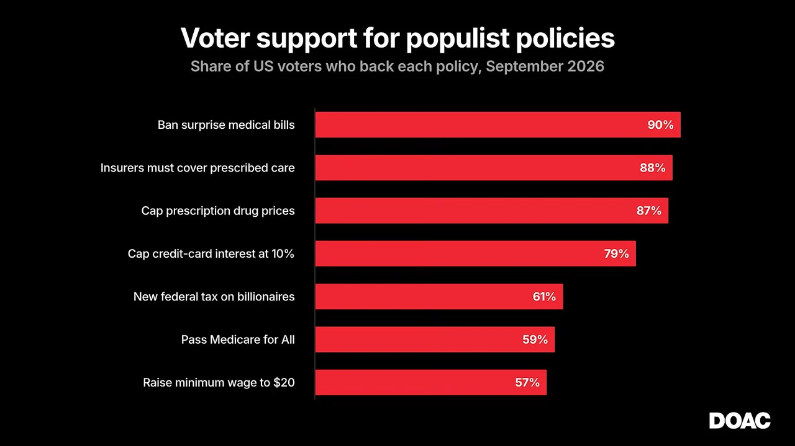
Voter support for populist policies Share of US voters who back each policy, September 2026 Ban surprise medical bills 90% Insurers must cover prescribed care 88% Cap prescription drug prices 87% Cap credit-card interest at 10% 79% New federal tax on billionaires 61% Pass Medicare for All 59% Raise minimum wage to $20 57%
샌더스가 여성·흑인·성소수자 권리에서는 "진보가 있었다"고 말하는 부분(1:17:19)에 나온 그래프입니다.
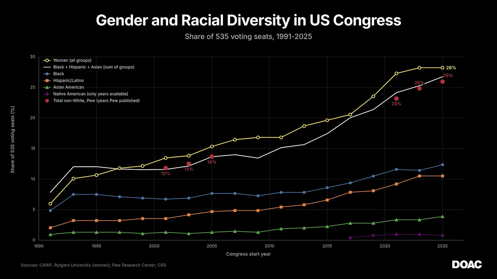
Gender and Racial Diversity in US Congress
Share of 535 voting seats, 1991-2025
범례: Women (all groups) / Black + Hispanic + Asian (sum of groups) / Black /
Hispanic/Latino / Asian American / Native American (only years available) /
Total non-White, Pew (years Pew published)
표시된 값: Women 28% (2025) · Black+Hispanic+Asian 26% (2025) ·
Pew 비백인 합계 12% · 13% · 14% · 23% · 25% · 26%
Sources: CAWP, Rutgers University (women); Pew Research Center; CRS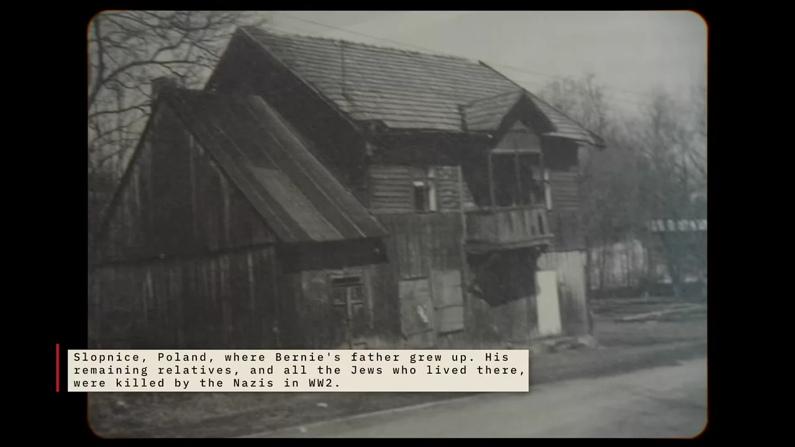
Slopnice, Poland, where Bernie's father grew up. His remaining relatives, and all the Jews who lived there, were killed by the Nazis in WW2.
구간은 1:07:35 ~ 1:12:16, 1:25:05 ~ 1:28:06입니다. [1]
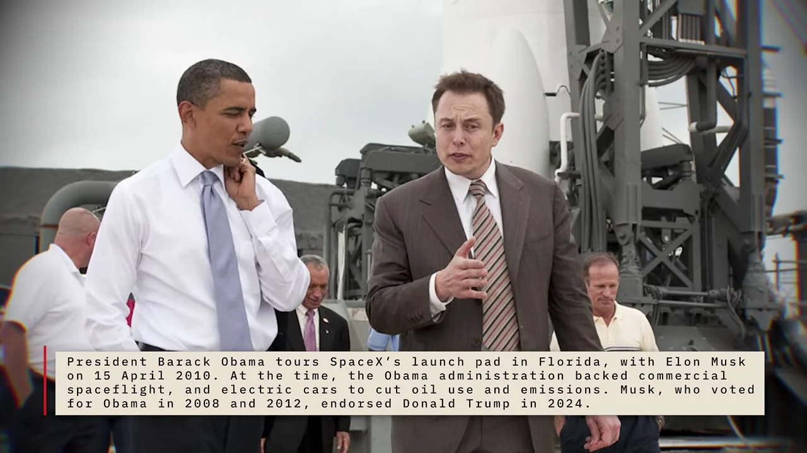
President Barack Obama tours SpaceX's launch pad in Florida, with Elon Musk on 15 April 2010. At the time, the Obama administration backed commercial spaceflight, and electric cars to cut oil use and emissions. Musk, who voted for Obama in 2008 and 2012, endorsed Donald Trump in 2024.
아래 두 블록은 보고서 제안입니다. 영상에 나온 문장이 아닙니다.
원문(영상 근거): 샌더스는 수치를 많이 들지만(60% 월급생활, 연 6만 명 사망, 로비스트 1,500명, 억만장자 2,000명·연 4,000억 달러, RAND 부 이전 등), 영상 안에서도 화면 그래픽과 말이 다른 곳이 있습니다(부유세 대상 938명 vs 약 2,000명, 10년 4.4조 vs 4조 달러). [1]
다음은 버니 샌더스가 2026년 11월 The Diary Of A CEO 인터뷰에서 말한 주장입니다. 각 주장에 대해 ① 1차 출처(정부 통계, 연구기관 보고서, 법안 원문)를 찾아 주고 ② 수치가 맞는지, 틀리면 실제 값은 얼마인지 ③ 기준 연도와 정의(무엇을 셌는지)를 표로 정리해 주세요. 출처를 찾지 못하면 "확인 불가"라고 적고 추측하지 마세요. 1. 미국인의 60%가 월급으로 근근이 생활한다(paycheck to paycheck). 2. 의료비를 감당하지 못해 해마다 약 6만 명이 숨진다. 3. 제약 업계 로비스트는 의원 535명에 대해 1,500명이 넘는다. 4. 억만장자 순자산 5% 부유세로 연 약 4,000억 달러, 10년 약 4조 달러를 걷을 수 있다. (대상 인원: 약 2,000명 vs 938명) 5. RAND 연구에 따르면 지난 50년간 하위 90%에서 상위 1%로 큰 규모의 부가 이전됐다. (금액 포함) 6. 일론 머스크 한 사람이 미국 하위 53% 가구보다 많은 부를 가지고 있다. 7. 미국 연방 최저임금은 시간당 7.25달러로 오랫동안 바뀌지 않았다.
원문(영상 근거): 진행자는 동의하면서도 세 번 반론합니다. 비상장 지분에 매기는 부유세의 실행 방식(29:29), 미국만 AI를 늦출 때의 경쟁(43:47), 북유럽 모델의 트레이드오프(55:54)입니다. [구두]
버니 샌더스와 스티븐 바틀렛의 대담(2026.11)에서 나온 쟁점 세 가지를 토론하고 싶습니다. 각 쟁점마다 ① 찬성 측 가장 강한 논거 3개 ② 반대 측 가장 강한 논거 3개 ③ 양쪽이 합의할 수 있는 중간안 1개 ④ 판단에 필요한 데이터 1개를 정리해 주세요. 한쪽 편을 들지 말고, 근거가 약한 주장에는 "근거 약함"이라고 표시해 주세요. 쟁점 1. 억만장자 순자산에 매년 5% 부유세를 매기는 것 vs 주식 담보 비과세 대출 같은 구멍을 막는 것 쟁점 2. 초지능 개발 금지·고급 AI 일시 중지 vs 국제 경쟁(특히 중국) 속 개발 지속 쟁점 3. 북유럽식 복지 모델(높은 세금·강한 안전망) vs 미국식 모델(낮은 세금·높은 소득 상한)
아래 수치는 검증된 사실로 읽지 않습니다. 영상 안에서 말이 다른 곳도 그대로 적었습니다.
| 항목 | 상태 | 메모 |
|---|---|---|
| 발언 전체 | 자동 자막 기반 | 영어 자동 생성 자막이라 단어·숫자가 틀릴 수 있음. 한국어는 보고서 번역 |
| RAND 부 이전 금액 | 영상에서 확인 불가 | 자막상 "$80 million". 맥락상 자막 오류 가능성 [추정] |
| 부유세 대상·규모 | 영상 안에서 불일치 | 발언 "약 2,000명·10년 4조 달러" vs 그래픽 "938 billionaires·$4.4tn over 10 years". 미검증 |
| 캐나다 약값 | 영상 안에서 불일치 | 발언 "10분의 1" vs 그래픽 "$44 (미국 $100 기준)". 미검증 |
| 포퓰리즘 정책 지지율 그래픽 | 출처 영상에서 확인 불가 | "September 2026" 표기만 있음 |
| 북유럽·미국 비교 | 출처 영상에서 확인 불가 | 진행자가 읽은 비교 자료 |
| 60% 월급생활, 연 6만 명 사망, 9,000만 명 무보험·보험 부족, 아동 빈곤율, 노인 20% 연 1만 5,000달러 이하, 로비스트 1,500명, 머스크 4억 달러·하위 53% | 미검증 | 샌더스 발언 |
| 커뮤니티 노트(머스크 4억 4,500만 달러, 캘리포니아 3억 7,840만 vs 3,350만 달러) | 미검증 | 제작진 노트(OpenSecrets 인용) 원문 그대로 옮김 |
| 2026 중간선거 결과, 이란 전쟁 경위 | 미검증 | 대담의 전제. 이 보고서에서 따로 확인하지 않음 |
| 인명 표기(엘-사예드, 맘다니 [추정], 머클리, 카사르 등) | 일부 [추정] | 자동 자막 "Abdullah Sayed", "Mondaire" 등을 표준 표기로 옮김 |
| "Flock AI", "Tulika" | 영상에서 확인 불가 | 자동 자막 그대로. 정확한 대상 불명 |
| 생년 관련 "World War I" | [추정] 자막 오류 | 1941년생이라 제2차 세계대전 시작 무렵 |